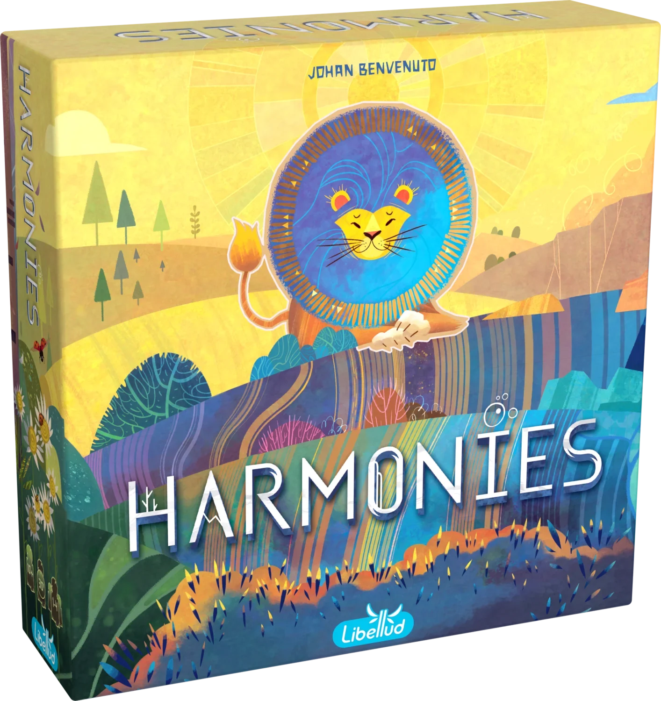

Resumo em 30 segundos
Destaques
- Empilhar muda o quebra-cabeça
- Uma ação obrigatória por turno
- Animais desenhados com personalidade
Atenção
- Cada um no seu tabuleiro
- Solo sem objetivo claro
- Regras de pontuação demoram a fixar
1 vitória em prêmios, incluindo Golden Geek 2024 · Jogo do Ano médio
Para quem: gosta de quebra-cabeça espacial e de ver a paisagem crescer na sua frente; quer um jogo de meia hora para jogar com família ou com quem joga pouco.
Como funciona Harmonies
Pegue três fichas, empilhe paisagens e encaixe habitats para os animais pontuarem.
- 1
Pegue três fichas
Escolha um dos cinco espaços do tabuleiro central e leve as três fichas coloridas que estão nele; é a única ação obrigatória do turno.
- 2
Monte a paisagem
Coloque as três fichas no seu tabuleiro hexagonal: verde sobre marrom faz árvore, cinza sobre cinza faz montanha e vermelho por cima faz prédio.
- 3
Adote um animal
Uma vez por turno, pegue uma das cinco cartas de Animal abertas e encha seus espaços de cubos. Você pode ter até quatro cartas incompletas.
- 4
Instale os cubos
Quando o padrão de habitat da carta aparece no seu tabuleiro, em qualquer orientação, mova um cubo para a ficha indicada. Casa com cubo fica travada.
- 5
Feche e pontue
O jogo acaba com o saco vazio ou alguém com duas casas livres. Somam-se árvores, montanhas, campos, prédios, água e o valor das cartas de Animal.
Ler as regras completas
O objetivo é fazer mais pontos com a paisagem que você monta no seu tabuleiro individual, uma grade de casas hexagonais, e com os animais que consegue instalar nela. São 120 fichas de madeira em seis cores: azul é água, cinza é montanha, marrom e verde formam árvores, amarelo é campo e vermelho é prédio.
No seu turno, a única ação obrigatória é pegar as três fichas de um dos cinco espaços do tabuleiro central e colocá-las no seu tabuleiro. Cada ficha vai numa casa vazia ou em cima de uma ou duas outras, desde que forme uma árvore (verde sobre marrom), uma montanha (até três cinzas) ou um prédio (vermelho sobre marrom, cinza ou vermelho). Nenhum outro empilhamento vale.
Uma vez por turno, você também pode pegar uma das cinco cartas de Animal abertas e preencher os espaços dela com cubos; é possível ter até quatro cartas incompletas. Cada carta mostra um pequeno padrão de cores e alturas, o habitat. Quando esse padrão aparece no seu tabuleiro, em qualquer orientação, o cubo de baixo da carta vai para a ficha indicada, e essa casa não recebe mais nada.
A partida acaba quando o saco não tem fichas para repor o tabuleiro central ou quando alguém termina o turno com duas casas livres ou menos; a rodada é completada. Árvores e montanhas pontuam pela altura, mas montanha isolada vale zero. Cada campo de duas ou mais fichas amarelas vale 5, e o prédio vale 5 se estiver cercado por pelo menos três cores diferentes.
A água pontua pelo comprimento do maior rio, no lado A do tabuleiro, ou pelo número de ilhas, no lado B. Cada carta de Animal soma o valor do espaço mais alto já sem cubo. As cartas de Espírito da Natureza, indicadas para depois das primeiras partidas, dão a cada pessoa um objetivo extra de pontuação.
Como é jogar Harmonies
“É o jogo aconchegante no seu melhor.”
Tabletop Gaming, Charlie Pettit (tradução livre)
Uma jogada típica: no tabuleiro central há um espaço com duas fichas cinza e uma vermelha. As cinzas viram uma montanha de altura dois ao lado de outra montanha, que assim passa a pontuar, e a vermelha vai em cima de uma ficha marrom, formando um prédio. Se uma das suas cartas pedia justamente aquela montanha, o cubo sai da carta e trava a casa. O regulamento traz um exemplo quase igual, com dois cinzas e um vermelho.
Continuar lendo
Os turnos são curtos e quase todo o pensamento está no seu próprio tabuleiro: qual trio de fichas fecha mais habitats agora, e qual casa deixar livre para a árvore de altura três que você quer terminar depois. O olhar para os vizinhos serve só para ver se o trio que você queria ainda estará lá.
A Tabletop Gaming resume a sensação como jogo aconchegante no seu melhor, e a Gaming Trend avisa que as combinações entre paisagem e animais só aparecem depois de uma ou duas partidas. Para o Meeple Mountain, ao fim da primeira partida o jogo já parecia daqueles que ficam para sempre na estante.
O que funciona muito bem
Empilhar muda o quebra-cabeça
Por quê?Para Dan Hinkin, da Gaming Trend, Harmonies tira o jogo de padrões do plano e o transforma num quebra-cabeça espacial em três dimensões. Na prática, uma ficha marrom colocada cedo pode virar a base de uma árvore de altura três, que vale mais, mas só se você reservar aquela casa por vários turnos.
Uma ação obrigatória por turno
Por quê?O turno se resume a pegar três fichas e colocá-las, com cartas e cubos como ações opcionais. A Tabletop Gaming descreve o jogo como fácil de aprender e uma boa porta de entrada para colocação de peças, e a Libellud diz que ele atende iniciantes sem perder profundidade tática.
Animais desenhados com personalidade
Por quê?Andrew Lynch, do Meeple Mountain, considera excepcionais as ilustrações de Maëva Da Silva e diz que os bichos têm personalidade de sobra. As 32 cartas de Animal mostram cada criatura dentro do habitat que você precisa montar, o que ajuda a lembrar o padrão pedido.
Paisagem e animais puxam para lados opostos
Por quê?O Meeple Mountain destaca a troca entre pontuar a geografia e pontuar os animais. Um exemplo: instalar o cubo de um animal sobre uma árvore de altura dois trava a casa, e aquela árvore nunca chega a três; ganhar os pontos da carta agora custa os da paisagem no fim.
Dois lados e objetivos extras
Por quê?O lado B do tabuleiro troca o rio por ilhas separadas por água, e as 10 cartas de Espírito da Natureza dão a cada um uma pontuação bônus diferente. A Tabletop Gaming e a Frontline Gaming apontam esse modo mais difícil como o que sustenta o interesse depois das primeiras partidas.
Muito bem avaliado no Brasil e lá fora
Por quê?Na Ludopedia, Harmonies tem nota 8,9 com 2.179 avaliações e peso 2,1, considerado leve-médio. No BoardGameGeek aparece com 8,0 e na 51ª posição do ranking, segundo a ficha da Board Game Bliss, números altos para um jogo de meia hora.
Pontos de atenção
Cada um no seu tabuleiro Moderada
Por quê?A Frontline Gaming aponta interação direta mínima entre jogadores. A única disputa é pegar o trio de fichas ou a carta de Animal que outra pessoa queria; ninguém mexe no tabuleiro alheio. Grupos que gostam de atrapalhar o vizinho, como em Azul, podem achar a partida solitária demais.
Solo sem objetivo claro Leve
Por quê?David Board, da Zatu, gosta do modo solo e joga com frequência, mas diz que a falta de um objetivo claro deixa a experiência pouco satisfatória. O regulamento só oferece uma tabela de sóis conforme a pontuação, sem cenários com condição de vitória, que a Zatu sente falta em comparação com Cascadia.
Regras de pontuação demoram a fixar Leve
Por quê?A Tabletop Gaming conta que algumas regras de pontuação levam algumas rodadas para ficar na cabeça. São detalhes como a montanha isolada que vale zero, o prédio que precisa de três cores diferentes ao redor e o rio contado pelo caminho mais curto entre as pontas.
Ideias e tema já conhecidos Leve
Por quê?Andrew Lynch, do Meeple Mountain, admite que os mecanismos são familiares e que o tema de natureza e animais está saturado, além de a experiência mudar pouco de uma partida para outra. Para ele, as paisagens diferentes que cada um constrói compensam essa sensação.
Quem pensa muito pode travar a mesa Leve
Por quê?A Frontline Gaming observa que a profundidade estratégica pode deixar as decisões lentas, e que jogar bem exige várias partidas. Com fichas que podem servir a vários habitats ao mesmo tempo, há jogadores que calculam cada trio do tabuleiro central antes de escolher.
Legenda para o Instagram
Não colou? Toque em “Compartilhar legenda” e escolha “Copiar”, ou segure o dedo no texto acima.
Para quem é
Perfil do jogo
Com quantos jogar
- Sozinho (Bom): Modo solo oficial: tabuleiro central de três espaços, seis fichas descartadas por turno e tabela de sóis; a Zatu gosta, mas sente falta de um objetivo além do placar.
- 2 jogadores (Ótimo): Uma das melhores contagens segundo a ficha da Board Game Bliss, com dados do BGG; usa o lado de dois a quatro jogadores do tabuleiro central.
- 3 jogadores (Ótimo): Também listada entre as melhores contagens pela Board Game Bliss, com mais gente disputando as cinco cartas de Animal abertas.
- 4 jogadores (Bom): Aceito pela caixa, com o mesmo tabuleiro central de cinco espaços, mas fora das melhores contagens listadas na ficha da Board Game Bliss.
É para você se…
- Gosta de quebra-cabeça espacial e de ver a paisagem crescer na sua frente
- Quer um jogo de meia hora para jogar com família ou com quem joga pouco
- Gostou de Cascadia e quer algo parecido, mas em três dimensões
- Joga muito a dois ou a três
- Aprecia arte de animais e componentes de madeira
Pense duas vezes se…
- Quer interação direta e atrapalhar o vizinho
- Procura um solo com cenários e condição de vitória
- Já cansou de jogos de natureza e padrões
- Busca um jogo de estratégia longo e pesado
Dica para a primeira partida
O regulamento recomenda o lado A do tabuleiro individual e deixar as cartas de Espírito da Natureza na caixa nas primeiras partidas. Ele também sugere não ter ao mesmo tempo duas cartas de Animal cujos cubos vão na mesma cor; a faixa colorida na lateral da carta ajuda a escolher. O tempo de explicação não foi confirmado nas fontes consultadas. O que mais confunde é a pontuação, segundo a Tabletop Gaming. Dica prática: deixe a carta de lembrete de cada jogador à vista e confira a regra de prédios antes de colocar uma ficha vermelha.
Edição nacional e preço
R$ 254 a R$ 299

A Asmodee publica Harmonies no Brasil desde 2024, segundo a Ludopedia, e o jogo não depende de idioma, de acordo com o ComparaJogos. Em 29/10/2026, o ComparaJogos listava o jogo novo entre R$ 254 (Pira no Boardgame) e R$ 299 (TabuLoja) no cartão, ou a partir de R$ 246 no Pix. A Facil Shopping vendia por R$ 275,79, com estoque, e a Loja No Barquinho por R$ 297, com a última unidade.
Expansões e versões
A Libellud lançou duas expansões que exigem o jogo-base: Pulse, chamada Pulsar no Brasil, com 10 cartas de Animal novas de padrões em três cores e opção de simetria espelhada, em pré-venda em outubro de 2026 segundo a Ludopedia; e Crescendo, com três módulos combináveis, anunciada no Brasil para 2026. Há versão digital oficial no Board Game Arena desde agosto de 2024.
Se você gosta de Harmonies…
 CascadiaTambém é um quebra-cabeça de habitats e animais para 1 a 4 pessoas em cerca de meia hora, mas plano: em Cascadia você combina peças hexagonais e fichas de fauna, enquanto Harmonies empilha fichas em altura.Ler a resenha →
CascadiaTambém é um quebra-cabeça de habitats e animais para 1 a 4 pessoas em cerca de meia hora, mas plano: em Cascadia você combina peças hexagonais e fichas de fauna, enquanto Harmonies empilha fichas em altura.Ler a resenha → WingspanOutro jogo de natureza ilustrado com cuidado, mas com cartas de aves e um motor que cresce a cada rodada. É mais longo e mais estratégico, um passo acima para quem gostou do clima de Harmonies.Ler a resenha →
WingspanOutro jogo de natureza ilustrado com cuidado, mas com cartas de aves e um motor que cresce a cada rodada. É mais longo e mais estratégico, um passo acima para quem gostou do clima de Harmonies.Ler a resenha → AzulQuebra-cabeça de peças premiado com o Spiel des Jahres, com a disputa direta que falta em Harmonies: as peças que você deixa no centro da mesa podem prejudicar o vizinho.Ler a resenha →
AzulQuebra-cabeça de peças premiado com o Spiel des Jahres, com a disputa direta que falta em Harmonies: as peças que você deixa no centro da mesa podem prejudicar o vizinho.Ler a resenha →
Veredito: Harmonies vale a pena?
RecomendadoHarmonies entrega um quebra-cabeça espacial elegante em meia hora: pegar três fichas, empilhar árvores e montanhas e encaixar habitats gera decisões interessantes com regras que cabem num turno, e a arte de Maëva Da Silva dá vida aos animais. O Golden Geek de Jogo do Ano médio e as notas altas na Ludopedia e no BGG confirmam o apelo. O que pesa é a interação baixa, já que cada um cuida do próprio tabuleiro, um solo sem objetivo além do placar e a sensação de tema já visto. Para quem gosta de Cascadia ou quer um jogo de família um degrau acima dos mais leves, vale os cerca de R$ 250 a R$ 300 da edição nacional.
Empilhe a paisagem certa e os animais vêm morar nela.
Comentários
Ainda não há comentários. Seja a primeira pessoa a comentar.
Continue lendo
Outras resenhas de jogos premiados da Elite Boardgamers.
 VantageÓtimo sozinho
VantageÓtimo sozinho CivolutionEstrategistas
CivolutionEstrategistas Heat: Pedal to the MetalO próximo passo
Heat: Pedal to the MetalO próximo passo SETI: Search for Extraterrestrial IntelligenceEstrategistas
SETI: Search for Extraterrestrial IntelligenceEstrategistas Galactic CruiseEstrategistas
Galactic CruiseEstrategistas RootEstrategistas
RootEstrategistas
Gostou da resenha?
A Elite Boardgamers publica resenhas de jogos premiados todos os dias. Entre no grupo para conversar sobre jogos e siga no Instagram.
Fontes (15)
- Libellud – Harmonies designer, artista, jogadores, duração, idade, expansões Pulse e Crescendo, versão digital
- Libellud – Regras oficiais de Harmonies (PDF, inglês) componentes, turno, empilhamento, fim de jogo, pontuação, modo solo e recomendações para as primeiras partidas
- Ludopedia – Harmonies nota 8,9 com 2.179 avaliações, peso 2,1 com 223 votos e edição da Asmodee (números via busca)
- Ludopedia – Harmonies: Pulsar expansão em pré-venda no Brasil em outubro de 2026
- Ludopedia – Harmonies: Crescendo expansão anunciada no Brasil para 2026
- Board Game Bliss – Harmonies nota BGG 8,0, 51º no ranking, peso 2,0, melhor com 2 e 3, duração de 30 a 45 minutos
- ComparaJogos – Harmonies edição Asmodee, sem dependência de idioma, preços em lojas brasileiras em 29/10/2026
- Facil Shopping – Harmonies preço de R$ 275,79 (R$ 256,48 no Pix) e estoque em 29/10/2026
- Loja No Barquinho – Harmonies preço de R$ 297 (R$ 282,15 no Pix) em 29/10/2026
- Tabletop Gaming – Harmonies review citação, regras fáceis, pontuação que demora a fixar, modo difícil
- Meeple Mountain – Harmonies review ilustrações, troca entre paisagem e animais, mecanismos familiares
- Gaming Trend – Harmonies review quebra-cabeça em três dimensões, combinações que aparecem após uma ou duas partidas
- Frontline Gaming – Harmonies review interação mínima, decisões lentas, modos solo e difícil
- Zatu – Harmonies solo review modo solo sem objetivo claro, partida solo de cerca de 15 minutos
- Board Game Arena – Harmonies chega ao BGA versão digital, notícia de 28/08/2024
Consulta às fontes em 29/10/2026.